2.1.1. Matrix Storage¶
The oneMKL BLAS and LAPACK routines for DPC++ use several matrix and vector storage formats. These are the same formats used in traditional Fortran BLAS/LAPACK.
General Matrix
A general matrix A of m rows and n columns with
leading dimension lda is represented as a one dimensional
array a of size of at least lda * n. Before entry in
any BLAS function using a general matrix, the leading m by
n part of the array a must contain the matrix A. The
elements of each column are contiguous in memory while the
elements of each row are at distance lda from the element in
the same row and the previous column.
Visually, the matrix
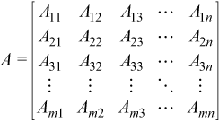
is stored in memory as an array
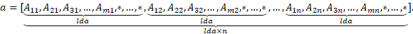
Triangular Matrix
A triangular matrix A of n rows and n columns with
leading dimension lda is represented as a one dimensional
array a, of a size of at least lda * n. The elements
of each column are contiguous in memory while the elements of each
row are at distance lda from the element in the same row and
the previous column.
Before entry in any BLAS function using a triangular matrix,
If
upper_lower = uplo::upper, the leadingnbynupper triangular part of the arrayamust contain the upper triangular part of the matrixA. The strictly lower triangular part of the arrayais not referenced. In other words, the matrix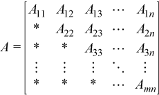
is stored in memory as the array
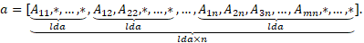
If
upper_lower = uplo::lower, the leadingnbynlower triangular part of the arrayamust contain the lower triangular part of the matrixA. The strictly upper triangular part of the arrayais not referenced. That is, the matrix
is stored in memory as the array
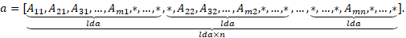
Band Matrix
A general band matrix A of m rows and n columns with
kl sub-diagonals, ku super-diagonals, and leading
dimension lda is represented as a one dimensional array a
of a size of at least lda * n.
Before entry in any BLAS function using a general band matrix, the
leading (kl + ku + 1) by n part of the array
a must contain the matrix A. This matrix must be supplied
column-by-column, with the main diagonal of the matrix in row
ku of the array (0-based indexing), the first super-diagonal
starting at position 1 in row (ku - 1), the first sub-diagonal
starting at position 0 in row (ku + 1), and so on. Elements in
the array a that do not correspond to elements in the band
matrix (such as the top left ku by ku triangle) are not
referenced.
Visually, the matrix A =
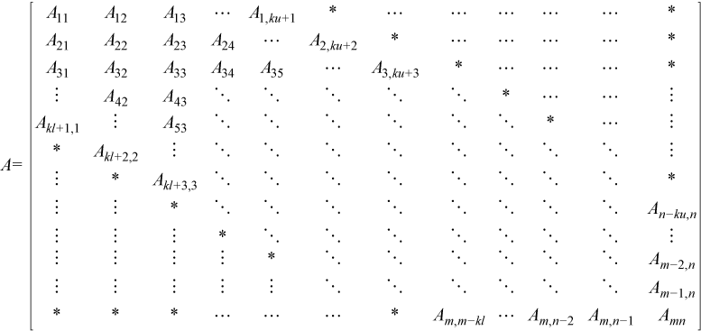
is stored in memory as an array
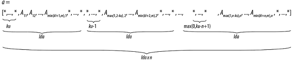
The following program segment transfers a band matrix from
conventional full matrix storage (variable matrix, with
leading dimension ldm) to band storage (variable a, with
leading dimension lda):
for (j = 0; j < n; j++) {
k = ku – j;
for (i = max(0, j – ku); i < min(m, j + kl + 1); i++) {
a[(k + i) + j * lda] = matrix[i + j * ldm];
}
}
Triangular Band Matrix
A triangular band matrix A of n rows and n columns
with k sub/super-diagonals and leading dimension lda is
represented as a one dimensional array a of size at least
lda * n.
Before entry in any BLAS function using a triangular band matrix,
If
upper_lower = uplo::upper, the leading (k+ 1) bynpart of the arrayamust contain the upper triangular band part of the matrixA. This matrix must be supplied column-by-column with the main diagonal of the matrix in row (k) of the array, the first super-diagonal starting at position 1 in row (k- 1), and so on. Elements in the arrayathat do not correspond to elements in the triangular band matrix (such as the top leftkbyktriangle) are not referenced.Visually, the matrix
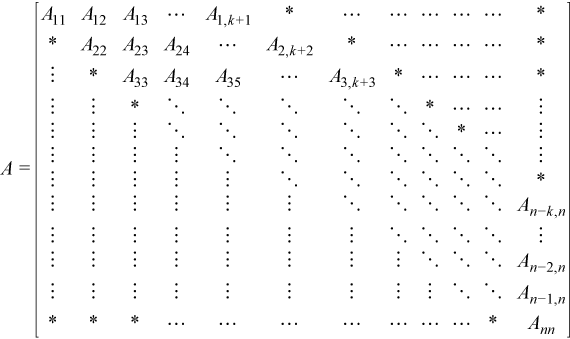
is stored as an array
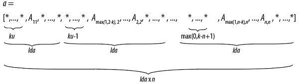
The following program segment transfers a band matrix from conventional full matrix storage (variable
matrix, with leading dimensionldm) to band storage (variablea, with leading dimensionlda):for (j = 0; j < n; j++) { m = k – j; for (i = max(0, j – k); i <= j; i++) { a[(m + i) + j * lda] = matrix[i + j * ldm]; } }If
upper_lower = uplo::lower, the leading (k+ 1) bynpart of the arrayamust contain the upper triangular band part of the matrixA. This matrix must be supplied column-by-column with the main diagonal of the matrix in row 0 of the array, the first sub-diagonal starting at position 0 in row 1, and so on. Elements in the arrayathat do not correspond to elements in the triangular band matrix (such as the bottom rightkbyktriangle) are not referenced.That is, the matrix
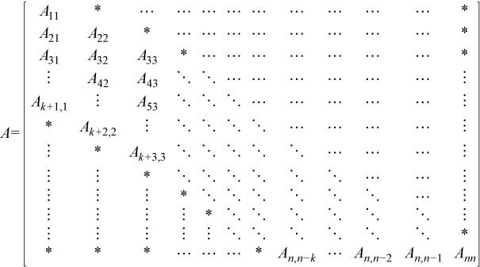
is stored as the array
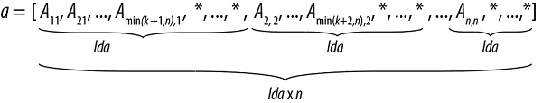
The following program segment transfers a band matrix from conventional full matrix storage (variable
matrix, with leading dimensionldm) to band storage (variablea, with leading dimensionlda):for (j = 0; j < n; j++) { m = –j; for (i = j; i < min(n, j + k + 1); i++) { a[(m + i) + j * lda] = matrix[i + j * ldm]; } }
Packed Triangular Matrix
A triangular matrix A of n rows and n columns is
represented in packed format as a one dimensional array a of
size at least (n*(n + 1))/2. All elements in the upper
or lower part of the matrix A are stored contiguously in the
array a.
Before entry in any BLAS function using a triangular packed matrix,
If
upper_lower = uplo::upper, the first (n*(n+ 1))/2 elements in the arrayamust contain the upper triangular part of the matrixApacked sequentially, column by column so thata[0] containsA11,a[1] anda[2] containA12 andA22 respectively, and so on. Hence, the matrix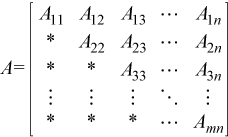
is stored as the array
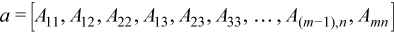
If
upper_lower = uplo::lower, the first (n*(n+ 1))/2 elements in the arrayamust contain the lower triangular part of the matrixApacked sequentially, column by column so thata[0] containsA11,a[1] anda[2] containA21 andA31 respectively, and so on. The matrix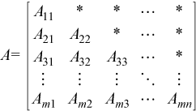
is stored as the array
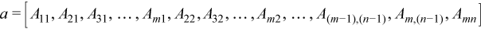
Vector
A vector X of n elements with increment incx is
represented as a one dimensional array x of size at least (1 +
(n - 1) * abs(incx)).
Visually, the vector
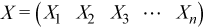
is stored in memory as an array
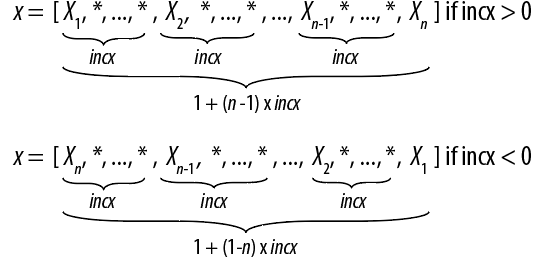
Parent topic: Dense Linear Algebra